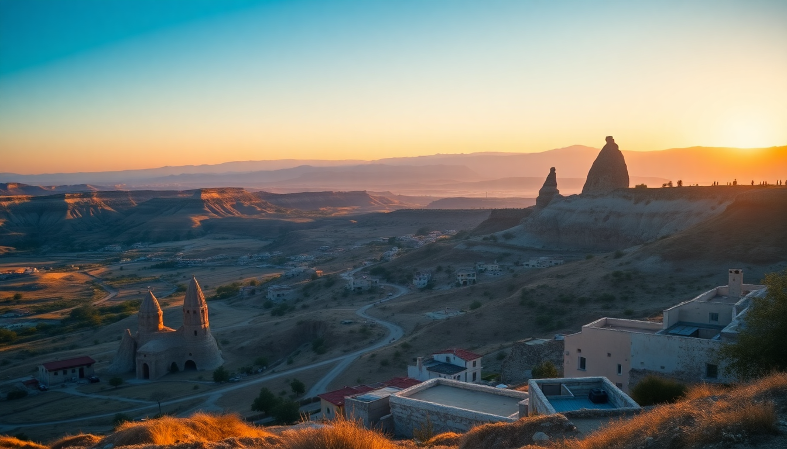

Where to Stay in Cappadocia: Best Cave Hotels for Every Budget

We spent two weeks in Cappadocia testing cave hotels from basic backpacker digs to the kind of suites that make you cancel your afternoon plans just to stare at a rock wall. Here’s where we actually recommend you stay, broken down by budget and neighborhood.
Why Stay in Göreme Instead of Uçhisar or Ürgüp?
Most first-timers should base themselves in Göreme. It’s the functional center of Cappadocia tourism — the balloon companies pick you up from your door, the bus station drops you a five-minute walk from most hotels, and you can stumble from your cave room straight into a row of decent restaurants. We stayed at Mithra Cave Hotel for three nights and could walk to the Göreme Open Air Museum in under 15 minutes. The trade-off: Göreme is touristy. Expect noise from early-morning balloon trucks and the occasional tour group clogging the alleys.
Uçhisar is quieter and higher. The views from Uçhisar Castle are the best in the region, and hotels like Museum Hotel sit right on the ridge. You’ll need a taxi or rental car to reach restaurants and shops. Ürgüp feels more like a real town — less fairy-chimney kitsch, more actual Turkish daily life — but you lose the immediate access to the valleys.
- Göreme: Best for walkability, balloon access, and restaurant variety. Stay here if it’s your first trip.
- Uçhisar: Best for views and quiet. Stay here if you have a car and want luxury.
- Ürgüp: Best for authenticity and wine tasting. Stay here if you don’t need to be in the tourist bubble.
What’s the Best Budget Cave Hotel Under $100 a Night?
For under $100, you’re not getting a real cave room with carved stone walls and a sunken bathtub. You’re getting a room built into the tuff rock — often a former storage cellar converted into a simple bedroom. That’s fine. The best value we found was Kelebek Special Cave Hotel in Göreme. Rooms start around $70–$90 in low season. The breakfast spread on their terrace is generous (homemade jams, local cheese, olives), and they have a small pool that’s actually a converted cistern.
Koza Cave Hotel is another solid pick. It’s smaller, family-run, and the owner spent 20 minutes drawing us a map of the best hiking trails in the Rose and Red Valleys. The downside: no elevator, no parking, and the stairs to some rooms are steep. If you have mobility issues, skip this one.
- Kelebek Special Cave Hotel (Göreme): $70–$90, great terrace breakfast, real cave feel.
- Koza Cave Hotel (Göreme): $60–$80, family-run, excellent local advice.
- Cappadocia Cave Suites (Uçhisar): $80–$100, quieter location, but rooms are above ground with fake cave cladding.
Which Mid-Range Cave Hotels Offer Real Value?
The $150–$250 range is where Cappadocia shines. You get a genuine cave room — carved into the rock, thick walls that stay cool in summer and warm in winter — plus a good breakfast, a terrace with balloon views, and often a small spa or hammam.
Mithra Cave Hotel (where we stayed) is the standout. The rooms are cut into the cliffside, and the terrace is famous for sunrise balloon photos. We paid $180 a night in May, which included a massive breakfast and free airport transfers from Kayseri. Their “Royal Suite” was genuinely impressive — a two-level cave with a fireplace and a private terrace.
Sultan Cave Suites sits right next door and costs about the same. The rooms are slightly more polished (think boutique-hotel finishes), but we found the service less personal. Both hotels share the same view, but Mithra felt more relaxed.
- Mithra Cave Hotel: $150–$200, real cave rooms, free airport transfer, best sunrise terrace.
- Sultan Cave Suites: $170–$220, more polished interiors, but can feel crowded with photographers.
- Terra Cave Hotel (Göreme): $130–$160, smaller property, quieter, great for couples.
Are the Luxury Cave Hotels in Uçhisar Worth the Splurge?
If you have $400+ to drop on a room, Museum Hotel in Uçhisar is the only one we’d book again. It’s a Relais & Châteaux property built into the hillside, and the rooms are filled with actual antiques — Ottoman-era chests, Anatolian rugs, old copper vessels. The infinity pool overlooks the entire valley, and the restaurant, Lil’a, serves the best dinner we had in Cappadocia (the manti with garlic yogurt was perfect).
The catch: it’s isolated. You need a car or rely on their shuttle to get anywhere. And at $500–$800 a night, you’re paying for the view and the collection, not the location.
Argos in Cappadocia is the other big name. It’s in Uçhisar, built into a former monastery, and has a wine cave that stores bottles from local producers. We found the rooms beautiful but the service stiff — staff were professional but not warm. For the same money, Museum Hotel felt more like a home.
- Museum Hotel (Uçhisar): $400–$800, genuine antiques, best infinity pool view, restaurant Lil’a.
- Argos in Cappadocia (Uçhisar): $350–$700, wine cave, historic monastery setting, but impersonal service.
- Kayakapi Premium Caves (Ürgüp): $300–$500, huge suites with private pools, but feels like a resort more than a cave.
What About Hotels Near the Balloon Launch Points?
Balloon companies pick you up from any hotel in Göreme, so you don’t need to be right at the launch field. But if you want to watch the balloons inflate from your terrace without joining the 5 AM crowd, stay at Mithra or Sultan — both have east-facing terraces that overlook the valley where balloons launch.
For a more intimate setup, Cappadocia Inn in Göreme has only five rooms, all with private balconies facing the sunrise. We paid $140 a night and watched 60 balloons float past while drinking Turkish tea. No crowds, no photographers elbowing you for space.
- Mithra Cave Hotel (Göreme): East-facing terrace, 10-minute walk to balloon company offices.
- Cappadocia Inn (Göreme): Small, private balconies, $140–$160, very quiet.
- Sultan Cave Suites (Göreme): Same view as Mithra, but more crowded at sunrise.
Where Should I Stay for Hiking and Valley Access?
If your trip is about hiking the Rose, Red, or Ihlara Valleys, base yourself in Göreme near the Göreme Open Air Museum. From there, you can walk into the Rose Valley in 20 minutes. Kelebek Hotel sits right at the edge of the valley — we left our room at 6 AM and were on the trail before the tour buses arrived.
For the Ihlara Valley (about 40 minutes south), stay in Belisirma village. It’s tiny — a handful of guesthouses and restaurants along the river. Ihlara Valley Pension is basic but clean, with rooms starting at $50. No cave rooms here, just standard stone buildings. The advantage: you’re right at the valley entrance and can hike the 14-kilometer gorge before the midday heat.
- Kelebek Special Cave Hotel (Göreme): Steps from Rose Valley trailhead.
- Ihlara Valley Pension (Belisirma): $50–$70, basic but unbeatable location for Ihlara.
- Aydinli Cave Hotel (Göreme): $100–$130, near the Open Air Museum and bus stop.
FAQ
What’s the difference between a real cave hotel and a fake one? A real cave hotel has rooms carved directly into the natural tuff rock. You’ll see uneven walls, original rock ceilings, and sometimes old niches or storage cubbies. A fake cave hotel is a standard concrete building with a plaster facade painted to look like rock. Always check recent guest photos on Google Maps or Booking.com — if the walls look too smooth or the ceiling is flat, it’s fake. Real cave rooms stay naturally cool in summer and warm in winter; fake caves rely on HVAC.
Is it safe to stay in a cave hotel? Yes. The tuff rock in Cappadocia is soft but stable when properly reinforced. Most hotels have been carved and occupied for centuries, with modern structural supports added. We never felt unsafe. The bigger risk is the stairs — cave hotels are built on hillsides, so expect steep, uneven steps. If you have mobility issues, book a ground-floor room at a hotel like Mithra, which has ramps to the main terrace.
When should I book a cave hotel to get the best price? Book at least 3 months ahead for spring (April–May) and fall (September–October), when balloon season peaks. Prices double in those months. For winter (November–February), you can book 2 weeks out and find rooms at 40% off — just be prepared for snow and cancellations due to wind. We booked Mithra in May for $180; the same room in August was $220.
Conclusion
- Göreme is the best base for first-timers — walkable, central, and full of mid-range cave hotels like Mithra and Kelebek.
- Uçhisar wins for luxury and views, but you need a car. Museum Hotel is the splurge worth the money.
- Ürgüp is better for wine and local culture, not for balloon photos or hiking access.
- Real cave rooms cost $150+; anything under $100 is a carved room with basic amenities, not a luxury experience.
- Book early for spring and fall, and always check recent photos to confirm the room is actually carved into rock.